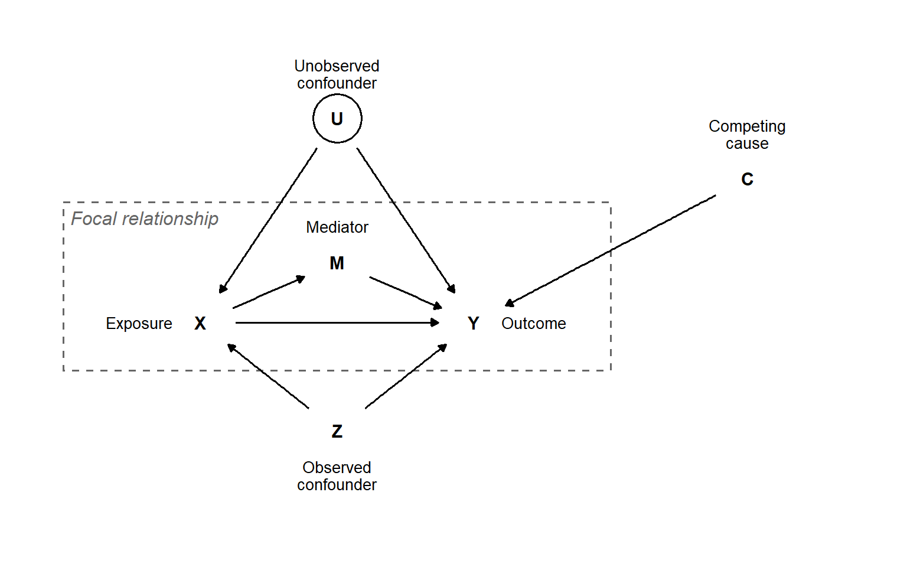
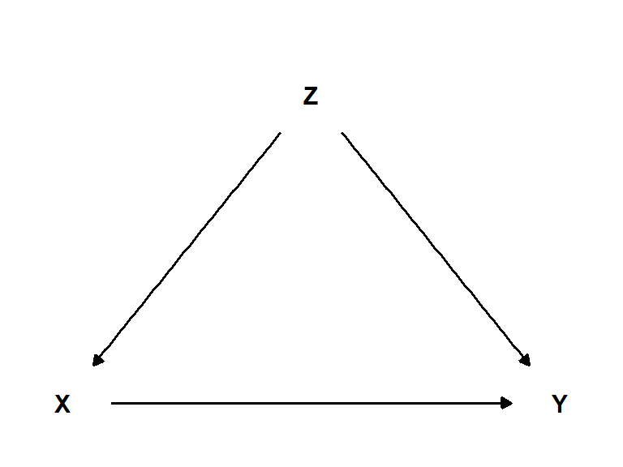
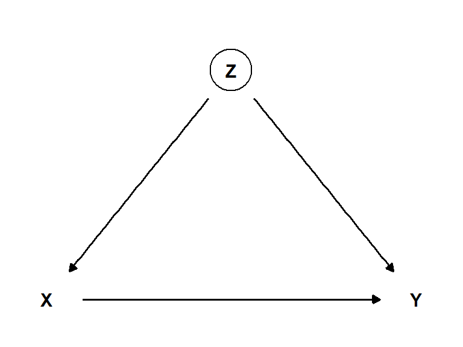
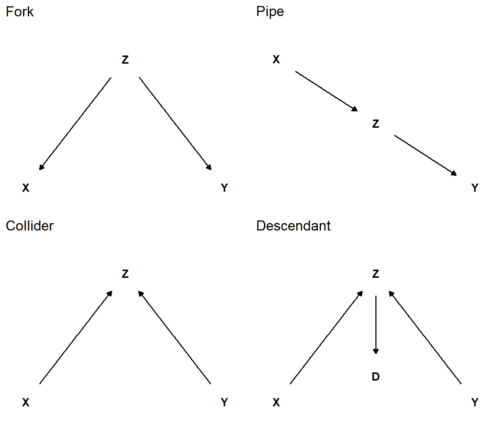
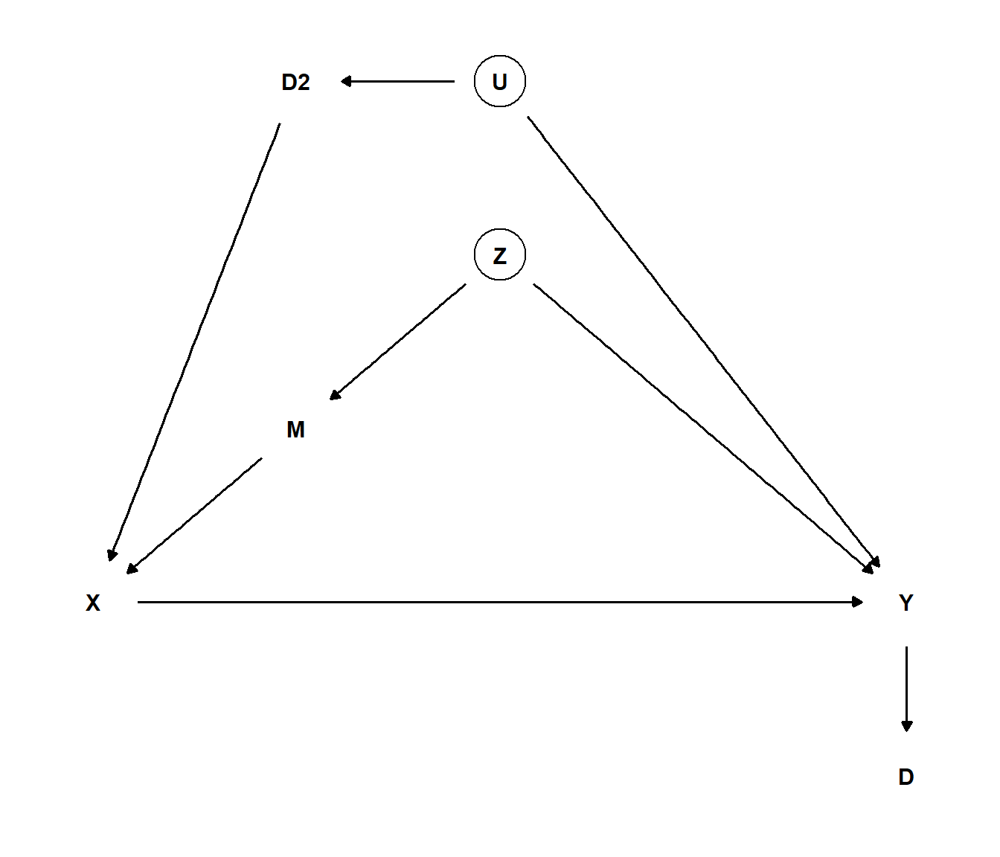

13 Directed acyclic graphs and mathematical notation
Models, as idealized representations of scientific systems, form a large part of modern science. Often, the models are implied but not explicitly used or discussed. In the most obvious cases, this might not be necessary to interpret a scientific project. However, as a model can be used to show assumptions needed to interpret a specific result or argue for a certain understanding of a phenomenon, one might argue that we need more explicit models.
What is a model? It could be a formalized system of equations describing relationships between variables, or a graphical representation of the same variables across a set of dimensions (Ellner and Guckenheimer 2006; Tennant et al. 2021; Pearl 2010). Less formally, a model could also be expressed in words, e.g., “our team is losing the ball in midfield, which stops us from scoring”. Often, a model implies causal associations between variables that can help us make predictions, such as “if we lose the ball, we will not be able to score.” The causal connections could also help us formulate interventions, such as “we will do a better job defending the ball in midfield to score more.” Going from a less formal model to a more formal representation requires a lot of thought and often simplifications. A complete model of an ongoing soccer game would be very difficult to capture as a statistical system or even graphically, without considerably reducing the complexity of the modeled game.
Simplification is a necessary prerequisite for models to be useful in understanding the systems we are studying. A simple model can be expanded with greater complexity once fundamental assumptions have been coded into it. As such, a graphical system showing the interrelationships among variables, without including magnitudes of effects or their functional form, could be a starting point. A formal system for such models is the Directed Acyclic Graph (DAG). A DAG includes nodes, representing variables, and arrows (arcs or edges) representing directed causal associations between variables (Figure 13.1). An exposure, or the independent variable in our study (X), and its effect on the outcome (Y) might be the focus of our study. Our model identifies a mediator (M) that is affected by X and, in turn, affects Y. Two different confounding effects are identified in the model: U represents an unobserved confound, indicated by a circle around the variable symbol, and Z represents an observed confound. Finally, a competing cause for the outcome is identified as the variable C (Figure 13.1).
The system shown in Figure 13.1 does useful work, since we can now identify variables to adjust for to quantify the total effect of X on Y (including the effect going through the mediator). If we believe that the unobserved confound (U) elicits a large enough effect on our measured variables, we won’t be able to obtain an unbiased total effect of X on Y using a regression model with the available variables. We will, however, be able to adjust for Z’s effect on our focal relationship. This highlights the usefulness of a DAG for making assumptions explicit when interpreting a statistical analysis of a system. In this case, we need to make a strong assumption about the unobserved confounder if we are going to interpret the X-to-Y relationship as causal.
13.1 Creating DAGs
The above figure is created using the ggdag package. The ggdag package relies on ggplot2 for its plotting capabilities and dagitty for algorithms used to analyze DAGs. This combination is flexible, as it allows visual adjustments to the graph using a familiar syntax.
The ggdagpackage uses the dagify function to set up a set of relationships. We say for example that Y is affected by X, this implies that the effect goes from X to Y, we expresse this as a relationship in dagify as Y ~ X.
library(tidyverse); library(ggdag)
# Set up coordinates for the graph
dag_coords <-
tibble(name = c("X", "Z", "Y"),
x = c(1, 2, 3),
y = c(1, 2, 1))
# Save our DAG
dag <- dagify(
Y ~ X,
Y ~ Z,
X ~ Z,
coords = dag_coords,
exposure = "X",
outcome = "Y")
# Create the visualization
dag_confound <- dag |>
tidy_dagitty() |>
ggplot(aes(x = x, y = y, xend = xend, yend = yend)) +
geom_dag_point(alpha = 1, size = 12, color = "white") +
geom_dag_text(color = "black") +
geom_dag_edges() +
theme_dag() +
scale_y_continuous(limits = c(0.9, 2.2))
dag_confound
A variable could be unobserved, meaning that we have no data on the variable, but we still believe it should be part of the causal model. I such case, it is convention to circle the unobserved variable. We can accomplish this by manipulating the data frame created with tidy_dagitty.
library(tidyverse); library(ggdag)
# Set up coordinates for the graph
dag_coords <-
tibble(name = c("X", "Z", "Y"),
x = c(1, 2, 3),
y = c(1, 2, 1))
# Save our DAG
dag <- dagify(
Y ~ X,
Y ~ Z,
X ~ Z,
coords = dag_coords,
exposure = "X",
outcome = "Y")
# Create the visualization
dag_confound <- dag |>
tidy_dagitty() |>
mutate(unobserved = if_else(name == "Z", TRUE, FALSE)) |>
ggplot(aes(x = x, y = y, xend = xend, yend = yend, color = unobserved)) +
geom_point(alpha = 1, size = 12, shape = 21) +
scale_color_manual(values= c("white", "black"),
guide = "none") +
geom_dag_text(color = "black") +
geom_dag_edges() +
theme_dag() +
scale_y_continuous(limits = c(0.9, 2.2))
dag_confound
In a DAG we can identify four basic relationships (Figure 13.4), a fork, a pipe a collider and a descendant. These basic relationships have corresponding simple coding solutions for drawing them (see code below).
Code
library(ggtext)
library(cowplot)
## FORK
fork_coords <-
tibble(name = c("X", "Y", "Z"),
x = c(1, 3, 2),
y = c(1, 1, 2))
# save our DAG
fork_dag <-
dagify(Y ~ Z,
X ~ Z,
coords = fork_coords)
## Pipe
pipe_coords <-
tibble(name = c("X", "Y", "Z"),
x = c(1, 3, 2),
y = c(2, 1, 1.5))
# save our DAG
pipe_dag <-
dagify(Y ~ Z,
Z ~ X,
coords = pipe_coords)
## Collider
collider_coords <-
tibble(name = c("X", "Y", "Z"),
x = c(1, 3, 2),
y = c(1, 1, 2))
# save our DAG
collider_dag <-
dagify(Z ~ Y,
Z ~ X,
coords = collider_coords)
## Descendant
des_coords <-
tibble(name = c("X", "Y", "Z", "D"),
x = c(1, 3, 2, 2),
y = c(1, 1, 2, 1.2))
# save our DAG
des_dag <-
dagify(Z ~ Y,
Z ~ X,
D ~ Z,
coords = des_coords)
# plot
fork <- fork_dag |>
tidy_dagitty() |>
ggplot(aes(x = x, y = y, xend = xend, yend = yend)) +
geom_dag_point(alpha = 1, size = 12, color = "white") +
geom_dag_text(color = "black") +
geom_dag_edges() +
theme_dag() +
scale_y_continuous(limits = c(0.9, 2.2)) +
theme() +
labs(title = "Fork")
pipe <- pipe_dag |>
tidy_dagitty() |>
ggplot(aes(x = x, y = y, xend = xend, yend = yend)) +
geom_dag_point(alpha = 1, size = 12, color = "white") +
geom_dag_text(color = "black") +
geom_dag_edges() +
theme_dag() +
scale_y_continuous(limits = c(0.9, 2.2)) +
labs(title = "Pipe") +
theme(plot.title = element_markdown())
collider <- collider_dag |>
tidy_dagitty() |>
ggplot(aes(x = x, y = y, xend = xend, yend = yend)) +
geom_dag_point(alpha = 1, size = 12, color = "white") +
geom_dag_text(color = "black") +
geom_dag_edges() +
theme_dag() +
scale_y_continuous(limits = c(0.9, 2.2)) +
labs(title = "Collider") +
theme(plot.title = element_markdown())
des <- des_dag |>
tidy_dagitty() |>
ggplot(aes(x = x, y = y, xend = xend, yend = yend)) +
geom_dag_point(alpha = 1, size = 12, color = "white") +
geom_dag_text(color = "black") +
geom_dag_edges() +
theme_dag() +
scale_y_continuous(limits = c(0.9, 2.2)) +
labs(title = "Descendant") +
theme(plot.title = element_markdown())
plot_grid(fork, pipe, collider, des, ncol = 2)
Benefits of using ggdag over simply drawing a DAG using ggplot is that ggdag allows for algorithmic analysis of the DAG using the dagitty package. An adjustment set, for example, is a set of variables that can close backdoor paths between the exposure and outcome (X and Y in Figure 13.5).
Code
# Set up coordinates for the graph
dag_coords <-
tibble(name = c("X", "Z", "Y", "M", "D", "U", "D2"),
x = c(1, 2, 3, 1.5, 3, 2, 1.5),
y = c(1, 2, 1, 1.5, 0.5, 2.5, 2.5))
# Save our DAG
dag <- dagify(
Y ~ X ,
Y ~ Z,
X ~ M,
M ~ Z,
X ~ D2,
Y ~ U,
D ~ Y,
D2 ~ U,
coords = dag_coords,
exposure = "X",
outcome = "Y")
# Create the visualization
dag |>
tidy_dagitty() |>
mutate(unobserved = if_else(name %in% c("U", "Z"), TRUE, FALSE)) |>
ggplot(aes(x = x, y = y, xend = xend, yend = yend, color = unobserved)) +
geom_point(alpha = 1, size = 12, shape = 21) +
scale_color_manual(values= c("white", "black"),
guide = "none") +
geom_dag_text(color = "black") +
geom_dag_edges() +
theme_dag() 
We can use the dag object (see code-fold above) to find a set of variables that will close the back door.
# Finding the adjsutment set
dagitty::adjustmentSets(dag){ U, Z }
{ M, U }
{ D2, Z }
{ D2, M }The adjustment set suggest that we could include either U and Z, M and U, D2 and Z or D2 and M in our model to account for confounding variables. In conclusion, ggdag combines the flexibility of ggplot2 and functions available for analyzing DAGs from the dagitty package.
13.2 Read more!
The ggdag package has a great website. Pearl (2010) provides an intriguing introduction to causal inference with connection to graphical models. McElreath (2020) is the definite book for thinking about causal relationship in connection with statistical modeling.